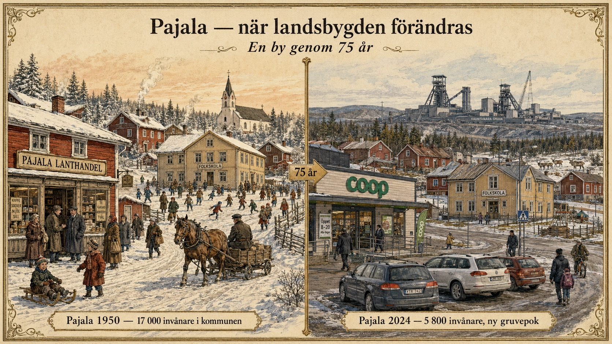

Pajala och Norrlands inland
— När landsbygden krymper —
En kommun som halverats
År 1950 bodde det omkring 17 000 människor i Pajala kommun i norra Norrbotten. Området var levande på sitt sätt — skogsbruk, gruvor i närheten, jordbruk på det knappa men funktionella sätt som varit möjligt sedan Tornedalen befolkades av nybyggare för flera hundra år sedan.
År 2024 bor det omkring 5 800 människor i Pajala kommun. På 75 år har befolkningen alltså minskat med två tredjedelar.

Det är en av de mest dramatiska befolkningsminskningarna i Sverige under modern tid. Och Pajala är inte ensamt. Liknande siffror finns för Övertorneå, Arvidsjaur, Vilhelmina, Storuman, Sorsele och dussintals andra kommuner i Norrlands inland. Tillsammans har dessa områden förlorat hundratusentals människor sedan 1950-talet.
Det är detta vi menar när vi pratar om "landsbygden som krymper". Det är inte bara en abstrakt geografisk process — det är verkliga byar som blivit nästan tomma, verkliga skolor som lagts ner, verkliga affärer som stängt.
Vad hände?
Tre processer pågick samtidigt under decennierna efter andra världskriget.
Den första var jordbrukets mekanisering. Traktorer, skördetröskor och nya odlingsmetoder gjorde att färre människor behövdes på gårdarna. En bonde som förr behövde fyra-fem hjälpare för skörd kunde nu klara sig med en. De andra blev arbetslösa. De flesta sökte sig till städerna i söder.
Den andra var skogsbrukets förändring. Skogen var länge Norrlands viktigaste näring. Hundratusentals skogsarbetare arbetade säsongsvis i skogen, ofta med hästar och handredskap. Men under 1950- och 60-talet kom motorsågar, sedan skogsmaskiner. Sedan datoriserade processormaskiner som en ensam förare kunde köra. Skogsbruket fortsatte producera lika mycket virke — men med en bråkdel av arbetskraften.
Den tredje var industriarbetenas centralisering. Många små bruk, sågverk och pappersbruk lades ner och ersattes av större anläggningar koncentrerade till kustorterna. Människor som tidigare arbetat i sitt eget område fick antingen flytta dit jobben fanns, eller bli arbetslösa.
Tillsammans skapade dessa tre processer en stark push-faktor från landsbygden. Och staten gjorde inget för att stoppa det. Tvärtom — under 1960- och 70-talet var den officiella politiken delvis att uppmuntra omflyttning till städerna. "Strukturrationaliseringen" sågs som ekonomiskt nödvändig.
Hur det syns idag
Den negativa spiralen vi gick igenom i standardtexten har spelats ut i Norrlands inland i decennier. Resultaten syns på flera sätt:
Skolor. I Pajala kommun fanns under 1960-talet över 30 grundskolor — i nästan varje by. Idag finns två. Barn skjutsas med skolbuss långa sträckor, ibland över en timme enkel resa.
Affärer. Lanthandeln var länge ett nav i varje by. Den hade öppet sex dagar i veckan, sålde allt från mat till verktyg till lokala nyheter. Den är nästan helt borta nu. Människor handlar i tätorten eller online.
Vårdcentraler. Många mindre orter har förlorat sina vårdcentraler. Privata läkare har försvunnit nästan helt. En person som bor i en by i Pajala kan ha 100 km eller mer till närmaste sjukhus.
Bostäderna. Hus står tomma. Vissa rivs av kommunen för att de blivit förfallna. Andra säljs för symboliska summor — det finns hus i Norrlands inland som kostat mindre än en begagnad bil. Det är inte att husen är dåliga — det är att ingen vill bo där.
Befolkningens ålder. I många små orter är medelåldern över 55 år. Vissa byar har inte haft ett nyfött barn på tio år. När de äldsta dör finns det ingen som tar över.
När gruvan plötsligt öppnade
Men Pajalas historia är inte bara en nedgångskurva. Något oväntat hände 2012.
Northland Resources, ett kanadensiskt gruvföretag, öppnade en stor järnmalmsgruva i Pajala kommun. Investeringarna var enorma — flera miljarder kronor. Plötsligt fanns det jobb. Hundratals människor flyttade in, både svenskar och utlänningar. Hyror steg dramatiskt. Hotell byggdes ut. Pajala-bornas blickar lyftes mot framtiden för första gången på generationer.
Sedan kom kraschen. År 2014 gick Northland Resources i konkurs. Järnmalmspriserna hade fallit. Skuldbördan var för tung. Gruvan stängdes. Tusentals jobb försvann över en natt. Människor som flyttat in fick flytta tillbaka. Pajala var tillbaka till utgångspunkten — fast med en stad full av byggprojekt som inte längre behövdes.
År 2018 öppnades gruvan igen av en annan ägare och har sedan dess varit i drift. Pajala har återigen en växande lokal ekonomi knuten till gruvan. Men erfarenheterna gjorde alla försiktiga. Att vila en hel kommuns framtid på en enda gruva — som kan stängas igen om världsmarknadspriset faller — är en sårbar strategi.
Försöken att vända
Vad försöker man göra för att bryta den negativa spiralen i Norrlands inland?
Esrange och rymdteknik. I Kiruna kommun, norr om Pajala, har Esrange Space Center utvecklats till en av Europas viktigaste platser för rymdraketuppskjutningar och satellitkommunikation. Det har skapat högteknologiska arbetstillfällen som lockar yngre, välutbildade människor.
Distansarbete och fiber. Sverige har en mycket välutbyggd fiberinfrastruktur, även på landsbygden. Det betyder att man kan arbeta från praktiskt taget vilken liten ort som helst om man har ett distansjobb. Vissa familjer har börjat söka sig till norra Sverige just av detta skäl — låga huspriser och bra internet är en attraktiv kombination.
Skogen som kolsänka. Norrlands stora skogar har plötsligt blivit ekonomiskt intressanta på nya sätt. Skog som binder kol kan säljas som klimatkrediter. Trä blir efterfrågat som byggmaterial när betongindustrin betraktas som klimatskadlig. Vissa norrländska orter ser möjligheter i en grön omställning.
Den nya gruvepoken. Sverige har stora fyndigheter av sällsynta jordartsmetaller, koppar och andra mineraler som EU vill bli mindre beroende av Kina för. Det driver nya gruvprojekt i norra Sverige. Etiska frågor är komplicerade — många av fyndigheterna ligger på samiska renbetesmarker. Men ekonomiskt kan det betyda nya jobb.
Turism. Norrlands inland har samiska kultur, fjäll, midnattssol, norrsken och vildmark. Det är en växande attraktion för internationella besökare. Pajala har också blivit känt för Tornedalens kulturarv och språket meänkieli.
Vad det betyder för framtiden
Pajalas historia visar något viktigt om landsbygdens framtid. Den negativa spiralen är inte oundviklig, men den är svår att bryta. Det krävs nya näringar, nya idéer och ofta särskild politik som skiljer sig från storstadsregionernas behov.
Frågan är också större än lokal. Vad ska Sveriges landsbygd vara? Är den till för att producera mat, virke, energi och naturupplevelser åt resten av landet? Eller är den ett område som ska kunna leva sitt eget liv med egna städer, eget arbetsliv, egen kultur?
Båda kan vara sant. Men de kräver olika politiker. Och de kräver att vi inte glömmer att Norrlands inland — trots all befolkningsminskning — fortfarande är hem för många människor som lever sina liv där, generation efter generation, och förtjänar att deras hembygd ska kunna bestå.
I en värld där över hälften av människorna bor i städer är det lätt att glömma den andra hälften. Pajala påminner oss om att hela bilden behövs.
Djupdykning till avsnitt 5 (Urbanisering). Fördjupningsnivå.